시대에서 시작하고 관점으로 좁혀요
먼저 시대를 고른 뒤 시간순, 인물별, 장소별 관점으로 사건을 다시 정렬합니다. 읽는 순서가 잡히면 성경의 큰 흐름이 훨씬 또렷해집니다.
Story Bible
지도 위에서 펼쳐지는 성경 이야기
이야기 성경 앱은 시대를 고른 뒤 시간순, 인물과 걷기, 장소로 시작하기 세 가지 관점 중 하나를 선택해 성경의 사건을 더 입체적으로 바라보는 성경 지도 앱입니다.
성경을 장면 하나씩이 아니라 지도 위에 연결되는 흐름으로 이해하도록 돕습니다.
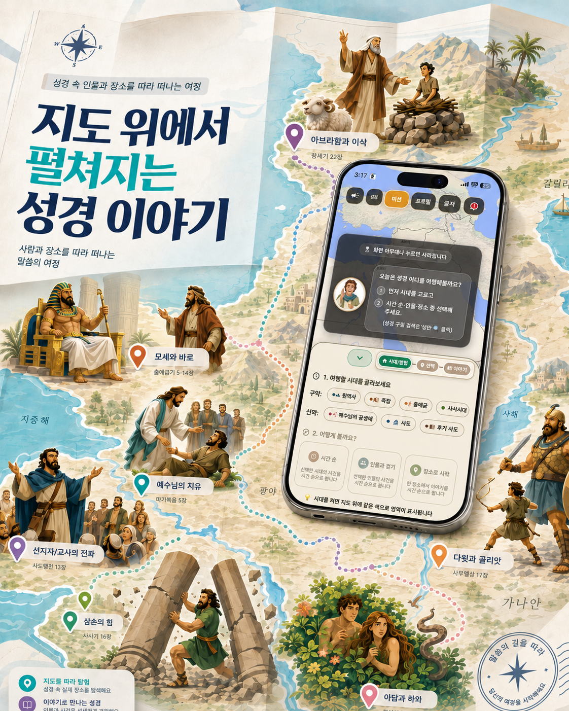
Reading Flow
성경은 시간순으로만 쓰인 책이 아니고, 한국 독자에게는 지역과 이동 흐름도 낯설 수 있습니다. 이야기 성경은 시대, 인물, 장소를 기준으로 사건을 지도 위에 펼쳐 성경의 흐름을 입체적으로 이해하도록 돕습니다.
먼저 시대를 고른 뒤 시간순, 인물별, 장소별 관점으로 사건을 다시 정렬합니다. 읽는 순서가 잡히면 성경의 큰 흐름이 훨씬 또렷해집니다.
선택한 사건들이 지도 위에 펼쳐져 어느 지역을 배경으로, 어떤 이동과 연결 속에서 이어지는지 확인할 수 있습니다. 오늘날의 국가와 지역 감각을 바탕으로 이야기가 놓인 배경을 자연스럽게 이해하도록 돕습니다.
지도 위 사건을 누르면 네 컷 이미지로 장면을 잡고, 성경 본문을 읽은 뒤 퀴즈로 이해를 확인합니다. 흐름에서 본 사건이 말씀으로 다시 이어집니다.
사건에 나의 감정을 새기고, 다이어리에서 그 마음과 묵상을 한눈에 관리합니다. 먼 옛날의 이야기가 오늘 내 삶에 어떻게 다가왔는지 기록으로 남습니다.
Use Cases
같은 사건도 어떤 관점으로 펼쳐 보느냐에 따라 다르게 이해됩니다. 이야기 성경은 인물의 여정, 시간순 흐름, 장소별 사건, 개인 묵상까지 하나의 읽기 흐름으로 이어줍니다.
01
아브라함처럼 한 인물의 여정을 따라가거나, 여러 인물을 함께 선택해 지도 위에서 서로 다른 경로를 한 번에 비교할 수 있습니다.
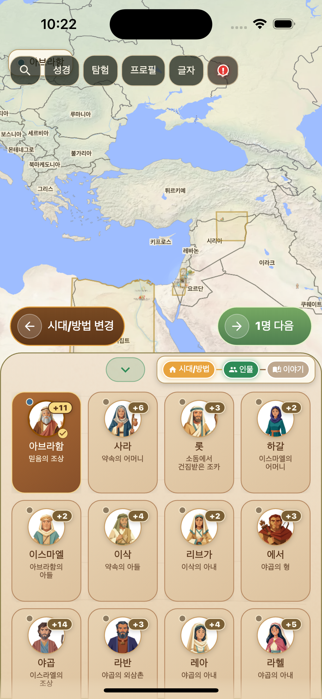
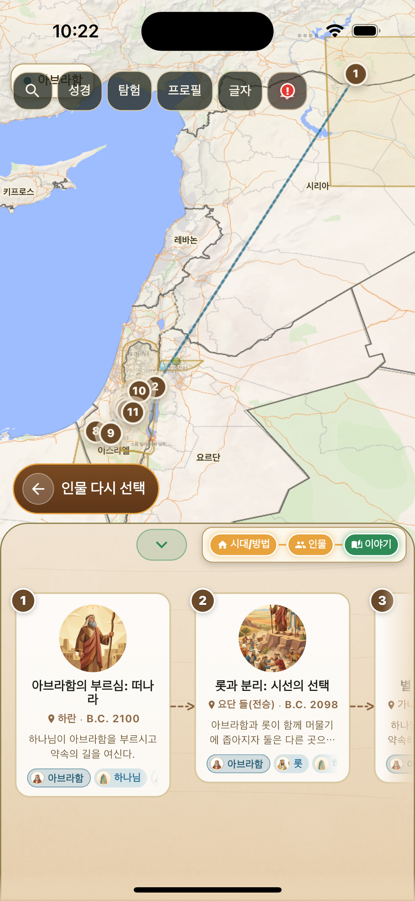
아브라함 선택 → 아브라함 여정 확인
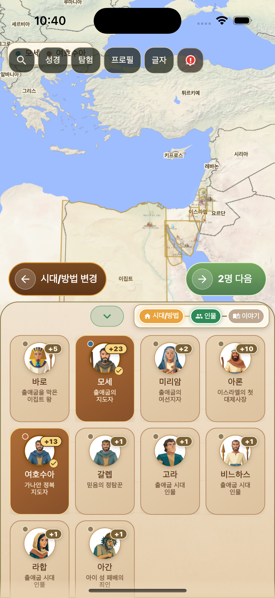
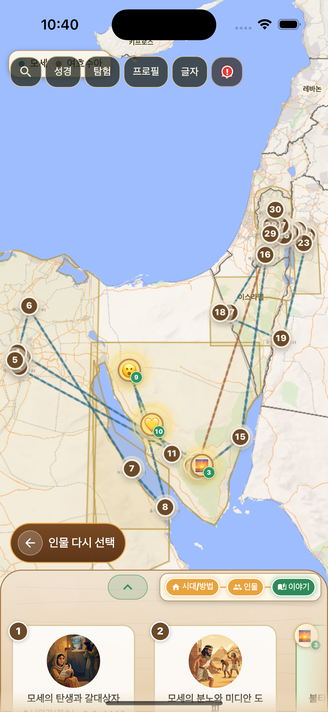
모세, 여호수아 선택 → 여러 인물 경로 동시 확인
02
바울의 2차, 3차 전도 여행처럼 특정 시기의 흐름을 선택하고, 이어지는 사건들을 지도 위 경로로 확인하며 시간의 맥락을 잡습니다.
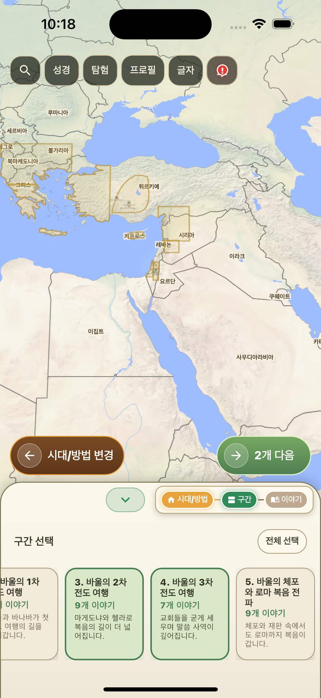
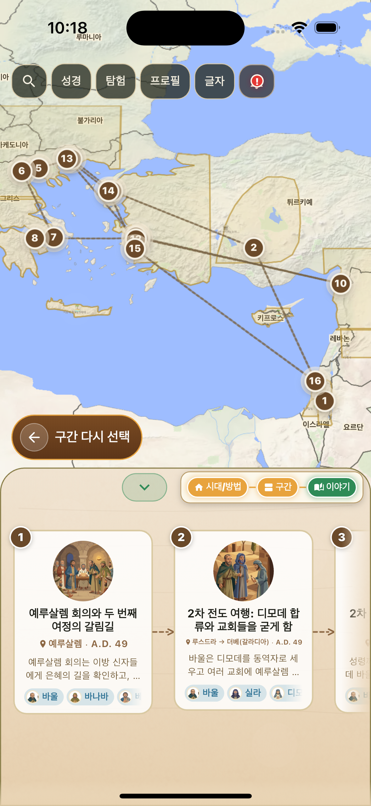
바울의 2, 3차 전도 여행 선택 → 지도 위 경로 확인
03
특정 장소나 지역을 고르면 그 배경 안에서 일어난 사건들을 모아 볼 수 있습니다. 낯선 지역을 하나의 이야기 무대로 이해하는 데 도움을 줍니다.
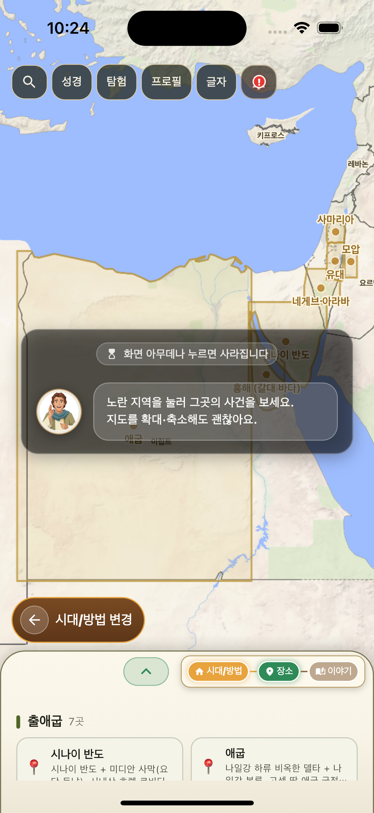
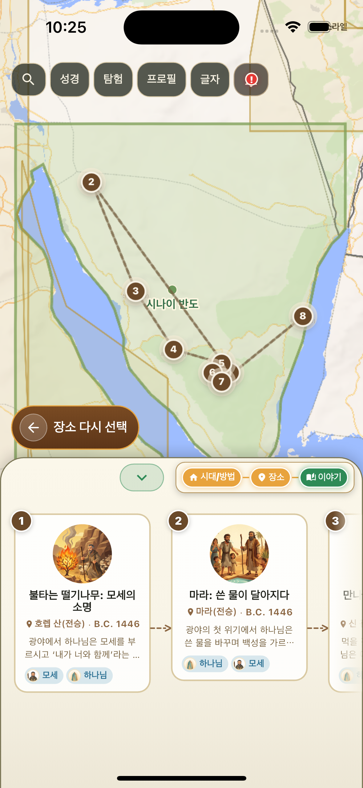
시나이 반도 선택 → 시나이 반도 위 사건 확인
04
사건 상세, 성경 본문, 퀴즈를 지나 느낀 감정을 지도에 새기고, 나의 다이어리에서 그 마음과 묵상 기록을 다시 돌아볼 수 있습니다.
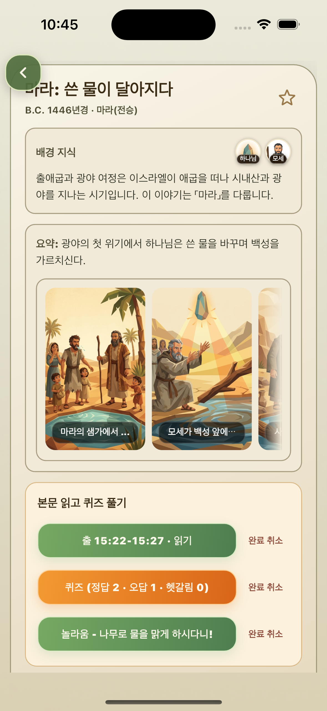
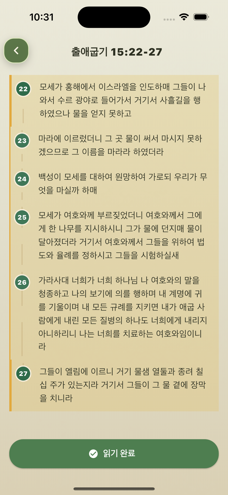
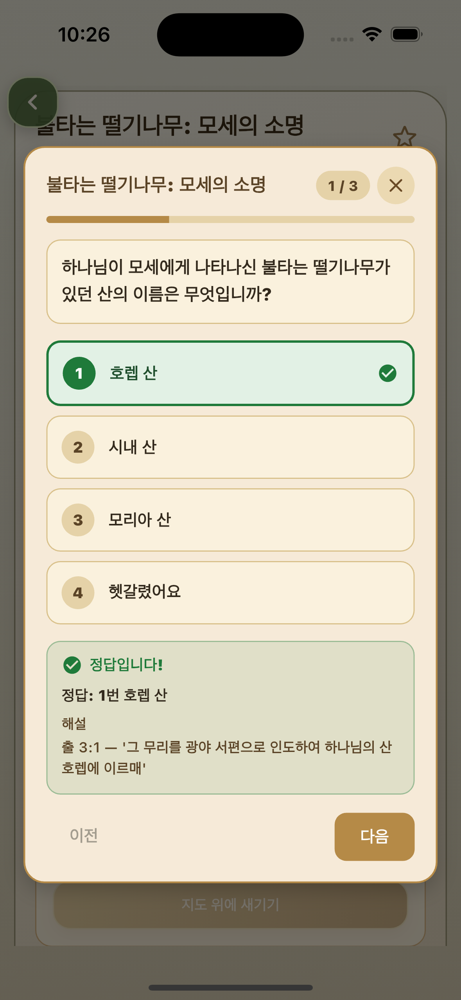
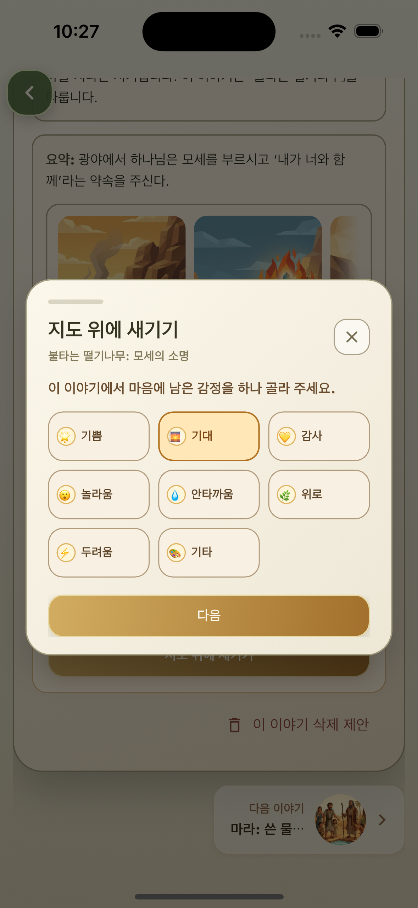
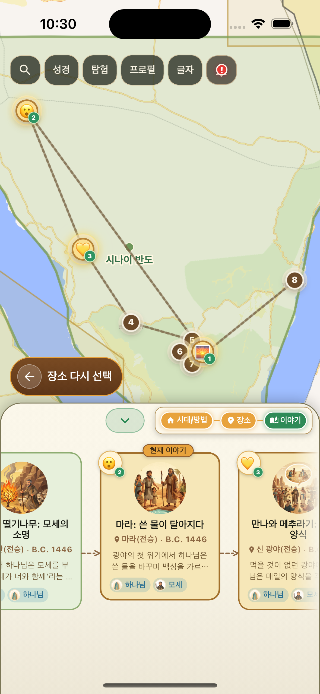
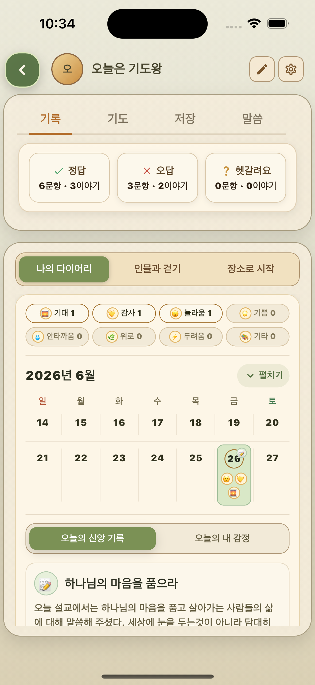
특정 사건의 정보 확인 → 성경 본문 읽기 → 퀴즈 풀기 → 감정 새기기 → 지도 위 나의 감정 확인 → 나의 다이어리 확인
05
출애굽 경로, 바울 선교여행, 예수님의 사역처럼 자주 찾는 성경 여정을 별도 페이지에서 인물 선택, 지도 위 사건 표시, 사건 상세 흐름으로 살펴볼 수 있습니다.
About App
성경 지도, 성경 이야기, 묵상 기록을 한 흐름으로 연결해 성경 사건을 더 쉽게 이해하도록 돕는 앱입니다.
이야기 성경 앱은 아브라함, 모세, 여호수아, 바울의 여정처럼 성경 속 사건을 지도 위의 흐름으로 보여주는 성경 지도 앱입니다.
시간순 흐름, 인물별 여정, 장소별 사건을 선택해 흩어진 성경 이야기를 하나의 맥락으로 다시 연결할 수 있습니다.
지도 위 사건을 누르면 성경 본문과 퀴즈로 이해를 확인하고, 느낀 감정을 지도와 다이어리에 남겨 나의 묵상으로 관리할 수 있습니다.
FAQ
이야기 성경 앱을 사용할 때 자주 궁금해하는 내용을 정리했습니다.
이야기 성경은 특정 해석을 제공하기보다, 성경 사건의 시간과 장소 흐름을 지도 위에서 이해하도록 돕는 앱입니다.
성경의 대부분 이야기를 커버하고 있지만 부족한 이야기들은 계속 업데이트 중입니다.
성경을 궁금해 하는 누구나 쉽게 사용할 수 있도록 개발되었어요. 교회학교, 청소년부, 소그룹 성경공부에서도 훌륭한 보조 도구가 될 수 있습니다.
admin@brand-i.net 으로 메일 주시면 최대한 빠르게 답변 드리도록 하겠습니다. 현재 개발 초기 단계이므로 많은 피드백이 필요합니다. 어떤 문의/피드백도 환영합니다 ^^
이런 분께 추천